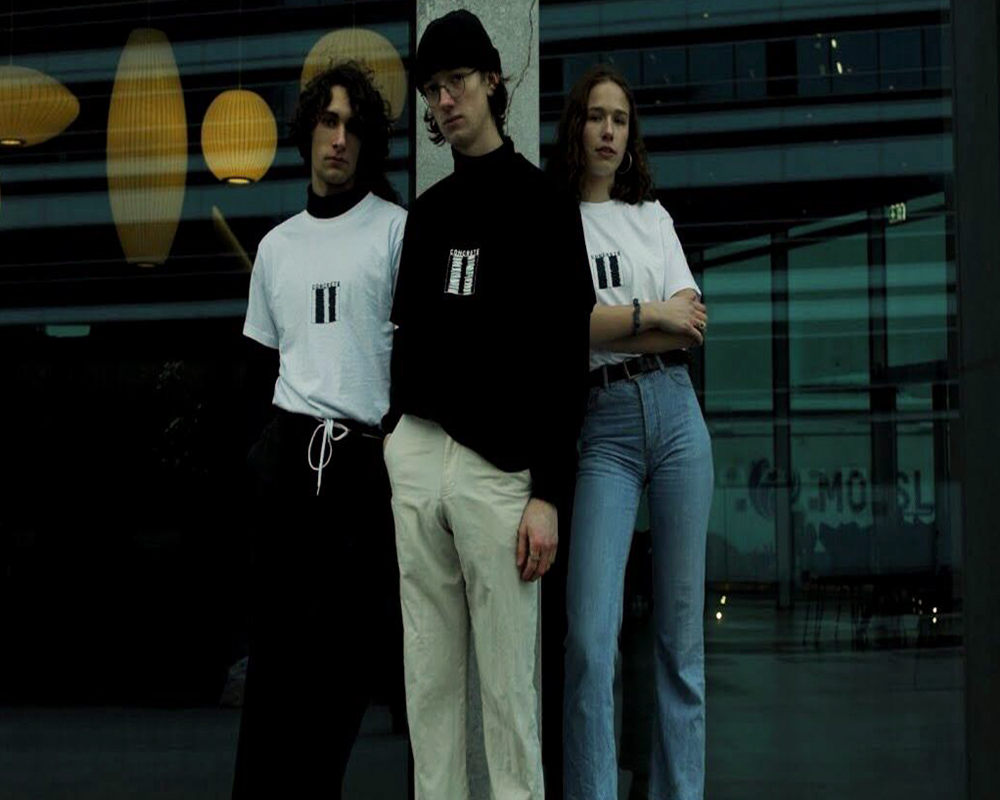

Mode på SU
I nutidens materialistiske samfund, kan man hurtigt bruge mange
penge på tøj, hvis man skal følge med i modeverdenens idéaler. Som
studerende kan det være svært at følge med, når indkomsten primært
går til mad, transport osv. Jeg vil derfor komme med idéer og
tricks til hvordan du kan spare penge på designer tøjet, men også
inspiration til hvordan du kan sammensætte outfits, med billigt
tøj.